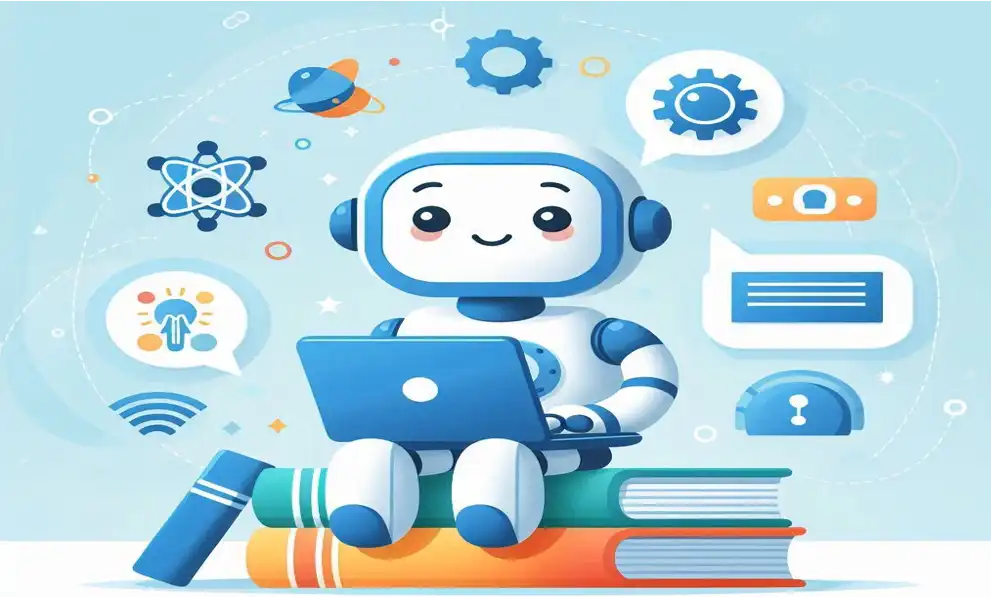

A aplicação da IA traz inúmeros benefícios para a sociedade como:
- Automação de tarefas repetitivas, reduzindo o tempo e aumentando a produtividade.
- Análise de dados em larga escala, permitindo decisões mais rápidas e precisas.
- Acessibilidade e inclusão, como em sistemas de leitura para pessoas com deficiência visual.
- Personalização de conteúdos, melhorando experiências em educação, saúde e entretenimento.
- Inovação em áreas criativas, como música, arte e design.

Malefícios e Desafios da Inteligência Artificial
Apesar dos benefícios, a IA também apresenta riscos e desafios que precisam ser considerados:
- Desemprego tecnológico, com a substituição de funções humanas por máquinas.
- Vieses algorítmicos, que podem reforçar discriminações sociais existentes.
- Privacidade e segurança de dados, muitas vezes vulneráveis ao uso indevido.
- Dependência tecnológica, que pode limitar a autonomia humana em decisões críticas.
- Uso malicioso, como deepfakes, manipulação de informações e ataques cibernéticos.
Esses pontos reforçam a necessidade de regulamentações éticas, transparência nos algoritmos e educação
digital
para garantir que a IA seja usada de forma responsável.